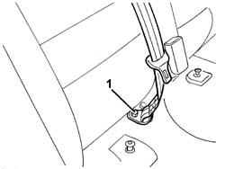
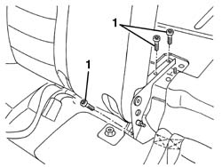
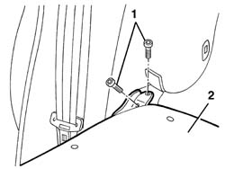
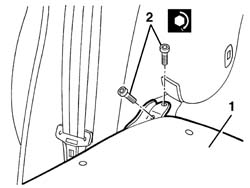
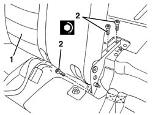

7050A15 SPLIT rear. seat RIGHT BACKREST- R.R.
- Path
- Procedures > 70 FITTINGS > 7050 REAR SEATS > 7050A rear seat assembly > 7050A15 SPLIT rear. seat RIGHT BACKREST- R.R.
- Kind
- repair procedure (removal / refitting; the operation number is the code)
- Applies to
- all engines; all production periods
- Interactive page
- https://sloeber94.github.io/elrnDB-a156/en/#/3238913
Applies to: all engines; all production periods; only with equipment: Station Wagon
 Removing
Removing
 Refitting
Refitting7040B28 PET transport PROTECTION and load carrying compartment COVER COMBINATION BLIND - R.R.
7040B10 load platform (luggage platform) trim - r+r
7050A13 SPLIT rear. seat LEFT BACKREST- R.R.
Raise the rear cushion.
1. Undo the bolt securing the end of the central rear seat belt (only for the version with seat belt with winder).

Applies to: all engines; all production periods; only with equipment: Station Wagon
1. Undo the bolts securing the squab to the floor.

Applies to: all engines; all production periods; only with equipment: Station Wagon
Lower the squab.
1. Undo the bolts securing the squab to the floor.
2. Remove the squab.

Applies to: all engines; all production periods; only with equipment: Station Wagon
Refitting
RemovingCheck that the squab is not damaged.
1. Position the squab.
2. Tighten the bolts securing the squab to the floor.
 | Fastening | Component | Ø | Value (daNm) |
|---|---|---|---|---|
2 | Bolt | REAR SEAT SQUAB | M8 | 2.4 |

Applies to: all engines; all production periods; only with equipment: Station Wagon
1. Lift the squab.
2. Tighten the bolts securing the squab to the floor.
| Fastening | Component | Ø | Value (daNm) |
|---|---|---|---|---|
2 | Bolt | REAR SEAT SQUAB | M8 | 2.4 |

Applies to: all engines; all production periods; only with equipment: Station Wagon
Check that the engagement device is working properly.
If necessary adjust the striker (refer to op. 7050A45 STRIKER FOR ATTACHMENT/RELEASE DEVICE for .one( SPLIT rear), seat BACKREST left or right - R.R. )
Fit the end of the central rear seat belt in position and secure with the bolt (only for the version with seat belt with winder).
| Fastening | Component | Ø | Value (daNm) |
|---|---|---|---|---|
- | Bolt | REAR SEAT BELT END | - | 4.0 |
Lower the rear cushion.
7050A13 SPLIT rear. seat LEFT BACKREST- R.R.
7040B10 load platform (luggage platform) trim - r+r
7040B28 PET transport PROTECTION and load carrying compartment COVER COMBINATION BLIND - R.R.
Topics linked from this page (4)
- 7040B10 load platform (luggage platform) trim - r+r
- 7040B28 PET transport PROTECTION and load carrying compartment COVER COMBINATION BLIND - R.R.
- 7050A13 SPLIT rear. seat LEFT BACKREST- R.R.
- 7050A45 STRIKER FOR ATTACHMENT/RELEASE DEVICE for .one( SPLIT rear), seat BACKREST left or right - R.R.
Topics that link to this page (5)
- 7050A35 Backrest FRAME for (second row), side seat left or right - R.R.
- 7050A43 ATTACHMENT/RELEASE DEVICE for one SPLIT rear seat BACKREST. -R.R.
- 7050A70 lh or rh device with cable (one) of one rear seat squab catch r r
- 7065B18 CENTRE REAR SEAT BELT - R.R.
- 7065B26 cable for attaching releasing rear central seat belt reel r r